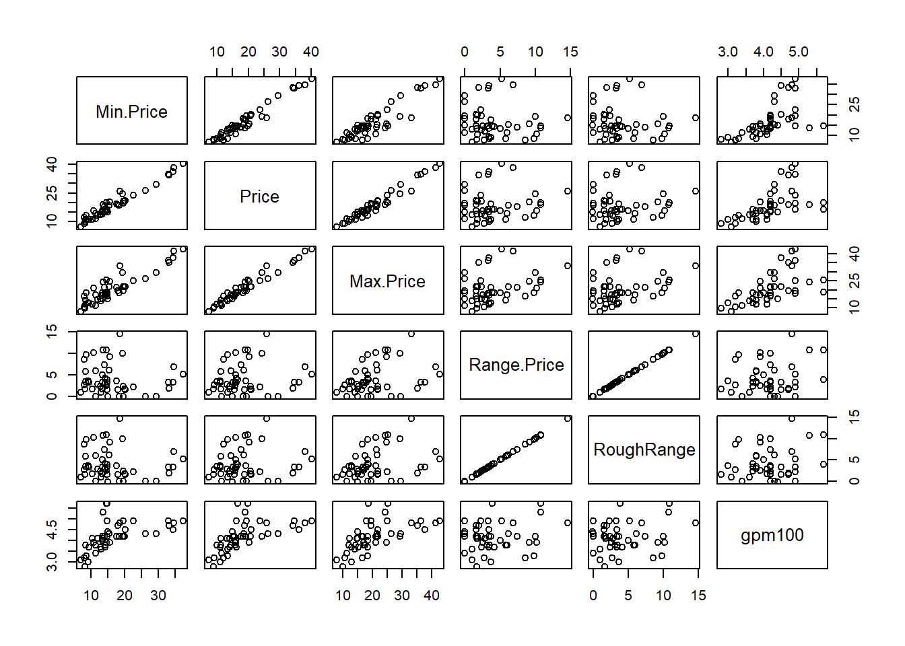
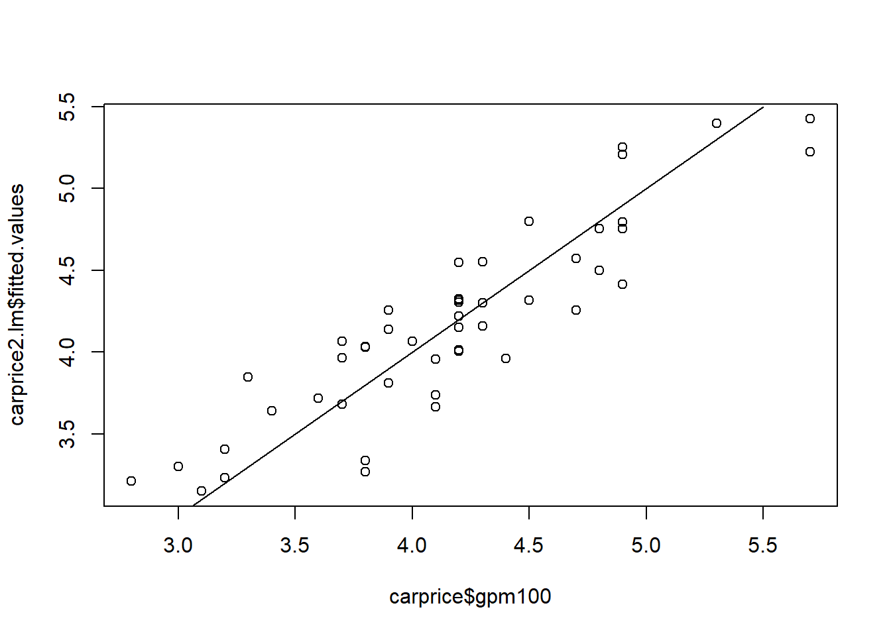

# Ruta absoluta de datos (según tu equipo)
data_path <- "C:/Users/manue/Desktop/lab-econometria/labs/data_epg"
if (!file.exists(file.path(data_path, "millaje.txt"))) {
message("ℹ️ Aviso: 'millaje.txt' no se encontró en data_path; el bloque DAAG usa dataset interno 'carprice'.")
}Laboratorio 4_epg: Uso de la Regresión Múltiple
Econometría para la Gestión — FEN-UAH
Material de apoyo elaborado a partir del texto de Fernando A. Crespo R. (2021) para el curso Econometría para la Gestión — FEN-UAH.
1 Uso de la Regresión Múltiple
2 Análisis de Correlaciones Simultáneas
El análisis inicial en regresión múltiple se centra en la relación entre las variables explicativas. Una herramienta fundamental es la matriz de correlación.
Una alta correlación entre las variables explicativas (\(X_i, X_j\)) es un indicio de multicolinealidad, lo que puede inestabilizar los coeficientes estimados.
La librería MASS es comúnmente utilizada en R, aunque la función cor() pertenece al paquete base.
R
library(MASS) # Ejemplo de uso # Permite ver correlaciones simultáneas cor(Datos[, c("X1", "X2", "X3")]) 3 Criterios de Especificación del Modelo
3.1 Eliminación de Variables Irrelevantes
Se deben eliminar las variables del modelo que no son estadísticamente significativas (\(\hat{\beta}_i\) no es distinto de cero), siempre y cuando el modelo global mantenga su significancia. El objetivo es obtener un modelo parsimonioso (simple y explicativo).
3.2 Inclusión de Interacciones
Se pueden agregar interacciones (\(X_i \times X_j\)) para modelar un efecto conjunto o condicional de dos variables sobre la respuesta (\(Y\)):
$$X_3 = X_2 \times X_1$$
4 Regresión Polinomial
La regresión polinomial se utiliza para modelar relaciones no lineales entre \(X\) y \(Y\) manteniendo la linealidad en los parámetros (\(\beta\)).
El modelo de regresión polinomial de grado \(k\) es:
$$y = \beta_0 + \beta_1 x + \beta_2 x^2 + \cdots + \beta_k x^k + \varepsilon$$
donde \(\varepsilon\) representa el término de perturbación aleatoria.
No existe una regla estricta para determinar el grado \(k\), pero la práctica sugiere incrementar el grado del polinomio hasta que el nuevo término deje de ser significativo. Esto se evalúa formalmente mediante una prueba ANOVA (o prueba \(F\)) que compara la mejora de ajuste entre el modelo de grado \(k\) y el modelo de grado \(k+1\).
5 Transformación de Variables
Tanto la variable dependiente (\(Y\)) como las independientes (\(X_i\)) pueden transformarse mediante funciones matemáticas (\(f(\cdot)\)) para:
Estabilizar la varianza de los residuos (resolver heterocedasticidad).
Mejorar la linealidad de la relación.
Normalizar la distribución de los errores.
$$y’ = f(y), \qquad x’ = g(x)$$
5.1 Transformación Logarítmica
Si se utiliza el logaritmo y alguna variable toma el valor cero (\(0\)), se debe aplicar un desplazamiento para evitar la indeterminación, usando:
$$\log(1 + y) \quad \text{o} \quad \log(1 + x)$$
5.2 Otras Transformaciones
Otras transformaciones comunes para estabilizar la varianza incluyen la raíz cuadrada:
$$y’ = \sqrt{y}$$
El objetivo principal es encontrar la transformación que minimice la varianza de los residuos (\(\sigma_{\varepsilon}^2\)) y asegure que el modelo cumpla con los supuestos clásicos de la regresión lineal.
6 Conclusión
La fase de especificación del modelo, que abarca el manejo de multicolinealidad, la selección de variables, la incorporación de efectos no lineales (polinomiales) y las transformaciones adecuadas, es crucial. Estas herramientas permiten construir modelos econométricos sólidos, válidos y parsimoniosos, mejorando la interpretación, la validez estadística y la capacidad predictiva del modelo de regresión múltiple.
7 Aplicación en R (sobre los contenidos anteriores)
# Librerías necesarias
# install.packages(c("tidyverse","openxlsx","MASS","corrplot","lmtest","DAAG","ggplot2"))
library(tidyverse); library(openxlsx); library(MASS); library(corrplot)
library(lmtest); library(DAAG); library(ggplot2)7.1 1) Ejemplo publicitario: tv, radio, periódico → ventas
tv <- c(230.1, 44.5, 17.2, 151.5, 180.8, 8.7, 57.5, 120.2, 8.6, 199.8, 66.1, 214.7, 23.8, 97.5, 204.1, 195.4, 67.8, 281.4, 69.2, 147.3, 218.4, 237.4, 13.2, 228.3, 62.3, 262.9, 142.9, 240.1, 248.8, 70.6, 292.9, 112.9, 97.2, 265.6, 95.7, 290.7, 266.9, 74.7, 43.1, 228.0, 202.5, 177.0, 293.6, 206.9, 25.1, 175.1, 89.7, 239.9, 227.2, 66.9, 199.8, 100.4, 216.4, 182.6, 262.7, 198.9, 7.3, 136.2, 210.8, 210.7, 53.5, 261.3, 239.3, 102.7, 131.1, 69.0, 31.5, 139.3, 237.4, 216.8, 199.1, 109.8, 26.8, 129.4, 213.4, 16.9, 27.5, 120.5, 5.4, 116.0, 76.4, 239.8, 75.3, 68.4, 213.5, 193.2, 76.3, 110.7, 88.3, 109.8, 134.3, 28.6, 217.7, 250.9, 107.4, 163.3, 197.6, 184.9, 289.7, 135.2, 222.4, 296.4, 280.2, 187.9, 238.2, 137.9, 25.0, 90.4, 13.1, 255.4, 225.8, 241.7, 175.7, 209.6, 78.2, 75.1, 139.2, 76.4, 125.7, 19.4, 141.3, 18.8, 224.0, 123.1, 229.5, 87.2, 7.8, 80.2, 220.3, 59.6, 0.7, 265.2, 8.4, 219.8, 36.9, 48.3, 25.6, 273.7, 43.0, 184.9, 73.4, 193.7, 220.5, 104.6, 96.2, 140.3, 240.1, 243.2, 38.0, 44.7, 280.7, 121.0, 197.6, 171.3, 187.8, 4.1, 93.9, 149.8, 11.7, 131.7, 172.5, 85.7, 188.4, 163.5, 117.2, 234.5, 17.9, 206.8, 215.4, 284.3, 50.0, 164.5, 19.6, 168.4, 222.4, 276.9, 248.4, 170.2, 276.7, 165.6, 156.6, 218.5, 56.2, 287.6, 253.8, 205.0, 139.5, 191.1, 286.0, 18.7, 39.5, 75.5, 17.2, 166.8, 149.7, 38.2, 94.2, 177.0, 283.6, 232.1)
radio <- c(37.8, 39.3, 45.9, 41.3, 10.8, 48.9, 32.8, 19.6, 2.1, 2.6, 5.8, 24.0, 35.1, 7.6, 32.9, 47.7, 36.6, 39.6, 20.5, 23.9, 27.7, 5.1, 15.9, 16.9, 12.6, 3.5, 29.3, 16.7, 27.1, 16.0, 28.3, 17.4, 1.5, 20.0, 1.4, 4.1, 43.8, 49.4, 26.7, 37.7, 22.3, 33.4, 27.7, 8.4, 25.7, 22.5, 9.9, 41.5, 15.8, 11.7, 3.1, 9.6, 41.7, 46.2, 28.8, 49.4, 28.1, 19.2, 49.6, 29.5, 2.0, 42.7, 15.5, 29.6, 42.8, 9.3, 24.6, 14.5, 27.5, 43.9, 30.6, 14.3, 33.0, 5.7, 24.6, 43.7, 1.6, 28.5, 29.9, 7.7, 26.7, 4.1, 20.3, 44.5, 43.0, 18.4, 27.5, 40.6, 25.5, 47.8, 4.9, 1.5, 33.5, 36.5, 14.0, 31.6, 3.5, 21.0, 42.3, 41.7, 4.3, 36.3, 10.1, 17.2, 34.3, 46.4, 11.0, 0.3, 0.4, 26.9, 8.2, 38.0, 15.4, 20.6, 46.8, 35.0, 14.3, 0.8, 36.9, 16.0, 26.8, 21.7, 2.4, 34.6, 32.3, 11.8, 38.9, 0.0, 49.0, 12.0, 39.6, 2.9, 27.2, 33.5, 38.6, 47.0, 39.0, 28.9, 25.9, 43.9, 17.0, 35.4, 33.2, 5.7, 14.8, 1.9, 7.3, 49.0, 40.3, 25.8, 13.9, 8.4, 23.3, 39.7, 21.1, 11.6, 43.5, 1.3, 36.9, 18.4, 18.1, 35.8, 18.1, 36.8, 14.7, 3.4, 37.6, 5.2, 23.6, 10.6, 11.6, 20.9, 20.1, 7.1, 3.4, 48.9, 30.2, 7.8, 2.3, 10.0, 2.6, 5.4, 5.7, 43.0, 21.3, 45.1, 2.1, 28.7, 13.9, 12.1, 41.1, 10.8, 4.1, 42.0, 35.6, 3.7, 4.9, 9.3, 42.0, 8.6)
periodico <- c(69.2, 45.1, 69.3, 58.5, 58.4, 75.0, 23.5, 11.6, 1.0, 21.2, 24.2, 4.0, 65.9, 7.2, 46.0, 52.9, 114.0, 55.8, 18.3, 19.1, 53.4, 23.5, 49.6, 26.2, 18.3, 19.5, 12.6, 22.9, 22.9, 40.8, 43.2, 38.6, 30.0, 0.3, 7.4, 8.5, 5.0, 45.7, 35.1, 32.0, 31.6, 38.7, 1.8, 26.4, 43.3, 31.5, 35.7, 18.5, 49.9, 36.8, 34.6, 3.6, 39.6, 58.7, 15.9, 60.0, 41.4, 16.6, 37.7, 9.3, 21.4, 54.7, 27.3, 8.4, 28.9, 0.9, 2.2, 10.2, 11.0, 27.2, 38.7, 31.7, 19.3, 31.3, 13.1, 89.4, 20.7, 14.2, 9.4, 23.1, 22.3, 36.9, 32.5, 35.6, 33.8, 65.7, 16.0, 63.2, 73.4, 51.4, 9.3, 33.0, 59.0, 72.3, 10.9, 52.9, 5.9, 22.0, 51.2, 45.9, 49.8, 100.9, 21.4, 17.9, 5.3, 59.0, 29.7, 23.2, 25.6, 5.5, 56.5, 23.2, 2.4, 10.7, 34.5, 52.7, 25.6, 14.8, 79.2, 22.3, 46.2, 50.4, 15.6, 12.4, 74.2, 25.9, 50.6, 9.2, 3.2, 43.1, 8.7, 43.0, 2.1, 45.1, 65.6, 8.5, 9.3, 59.7, 20.5, 1.7, 12.9, 75.6, 37.9, 34.4, 38.9, 9.0, 8.7, 44.3, 11.9, 20.6, 37.0, 48.7, 14.2, 37.7, 9.5, 5.7, 50.5, 24.3, 45.2, 34.6, 30.7, 49.3, 25.6, 7.4, 5.4, 84.8, 21.6, 19.4, 57.6, 6.4, 18.4, 47.4, 17.0, 12.8, 13.1, 41.8, 20.3, 35.2, 23.7, 17.6, 8.3, 27.4, 29.7, 71.8, 30.0, 19.6, 26.6, 18.2, 3.7, 23.4, 5.8, 6.0, 31.6, 3.6, 6.0, 13.8, 8.1, 6.4, 66.2, 8.7)
ventas <- c(22.1, 10.4, 9.3, 18.5, 12.9, 7.2, 11.8, 13.2, 4.8, 10.6, 8.6, 17.4, 9.2, 9.7, 19.0, 22.4, 12.5, 24.4, 11.3, 14.6, 18.0, 12.5, 5.6, 15.5, 9.7, 12.0, 15.0, 15.9, 18.9, 10.5, 21.4, 11.9, 9.6, 17.4, 9.5, 12.8, 25.4, 14.7, 10.1, 21.5, 16.6, 17.1, 20.7, 12.9, 8.5, 14.9, 10.6, 23.2, 14.8, 9.7, 11.4, 10.7, 22.6, 21.2, 20.2, 23.7, 5.5, 13.2, 23.8, 18.4, 8.1, 24.2, 15.7, 14.0, 18.0, 9.3, 9.5, 13.4, 18.9, 22.3, 18.3, 12.4, 8.8, 11.0, 17.0, 8.7, 6.9, 14.2, 5.3, 11.0, 11.8, 12.3, 11.3, 13.6, 21.7, 15.2, 12.0, 16.0, 12.9, 16.7, 11.2, 7.3, 19.4, 22.2, 11.5, 16.9, 11.7, 15.5, 25.4, 17.2, 11.7, 23.8, 14.8, 14.7, 20.7, 19.2, 7.2, 8.7, 5.3, 19.8, 13.4, 21.8, 14.1, 15.9, 14.6, 12.6, 12.2, 9.4, 15.9, 6.6, 15.5, 7.0, 11.6, 15.2, 19.7, 10.6, 6.6, 8.8, 24.7, 9.7, 1.6, 12.7, 5.7, 19.6, 10.8, 11.6, 9.5, 20.8, 9.6, 20.7, 10.9, 19.2, 20.1, 10.4, 11.4, 10.3, 13.2, 25.4, 10.9, 10.1, 16.1, 11.6, 16.6, 19.0, 15.6, 3.2, 15.3, 10.1, 7.3, 12.9, 14.4, 13.3, 14.9, 18.0, 11.9, 11.9, 8.0, 12.2, 17.1, 15.0, 8.4, 14.5, 7.6, 11.7, 11.5, 27.0, 20.2, 11.7, 11.8, 12.6, 10.5, 12.2, 8.7, 26.2, 17.6, 22.6, 10.3, 17.3, 15.9, 6.7, 10.8, 9.9, 5.9, 19.6, 17.3, 7.6, 9.7, 12.8, 25.5, 13.4)
datos <- data.frame(tv, radio, periodico, ventas)
pairs(datos)
r <- cor(datos)
corrplot(r, method="circle", type="lower", diag=FALSE, tl.col="black", tl.cex=1, tl.offset=0.1, tl.srt=45)
modelo <- lm(formula = ventas ~ tv + radio + periodico, data = datos)
summary(modelo)
Call:
lm(formula = ventas ~ tv + radio + periodico, data = datos)
Residuals:
Min 1Q Median 3Q Max
-8.8277 -0.8908 0.2418 1.1893 2.8292
Coefficients:
Estimate Std. Error t value Pr(>|t|)
(Intercept) 2.938889 0.311908 9.422 <2e-16 ***
tv 0.045765 0.001395 32.809 <2e-16 ***
radio 0.188530 0.008611 21.893 <2e-16 ***
periodico -0.001037 0.005871 -0.177 0.86
---
Signif. codes: 0 '***' 0.001 '**' 0.01 '*' 0.05 '.' 0.1 ' ' 1
Residual standard error: 1.686 on 196 degrees of freedom
Multiple R-squared: 0.8972, Adjusted R-squared: 0.8956
F-statistic: 570.3 on 3 and 196 DF, p-value: < 2.2e-16modelo <- lm(formula = ventas ~ tv + radio, data = datos)
summary(modelo)
Call:
lm(formula = ventas ~ tv + radio, data = datos)
Residuals:
Min 1Q Median 3Q Max
-8.7977 -0.8752 0.2422 1.1708 2.8328
Coefficients:
Estimate Std. Error t value Pr(>|t|)
(Intercept) 2.92110 0.29449 9.919 <2e-16 ***
tv 0.04575 0.00139 32.909 <2e-16 ***
radio 0.18799 0.00804 23.382 <2e-16 ***
---
Signif. codes: 0 '***' 0.001 '**' 0.01 '*' 0.05 '.' 0.1 ' ' 1
Residual standard error: 1.681 on 197 degrees of freedom
Multiple R-squared: 0.8972, Adjusted R-squared: 0.8962
F-statistic: 859.6 on 2 and 197 DF, p-value: < 2.2e-16rango_tv <- range(datos$tv)
nuevos_valores_tv <- seq(from = rango_tv[1], to = rango_tv[2], length.out = 20)
rango_radio <- range(datos$radio)
nuevos_valores_radio <- seq(from = rango_radio[1], to = rango_radio[2], length.out = 20)
predicciones <- outer(X = nuevos_valores_tv, Y = nuevos_valores_radio,
FUN = function(tv, radio) {
predict(object = modelo, newdata = data.frame(tv, radio))
})
superficie <- persp(x = nuevos_valores_tv, y = nuevos_valores_radio,
z = predicciones,
theta = 18, phi = 20,
col = "lightblue", shade = 0.1,
xlab = "tv", ylab = "radio", zlab = "ventas",
ticktype = "detailed",
main = "Predicción ventas ~ TV y Radio")
observaciones <- trans3d(datos$tv, datos$radio, datos$ventas, superficie)
error <- trans3d(datos$tv, datos$radio, fitted(modelo), superficie)
points(observaciones, col = "red", pch = 16)
segments(observaciones$x, observaciones$y, error$x, error$y)
shapiro.test(modelo$residuals)
Shapiro-Wilk normality test
data: modelo$residuals
W = 0.91804, p-value = 4.19e-09hist(modelo$residuals); plot(density(modelo$residuals))

dwtest(modelo,alternative ="two.sided",iterations = 1000)
Durbin-Watson test
data: modelo
DW = 2.0808, p-value = 0.5656
alternative hypothesis: true autocorrelation is not 0bptest(modelo)
studentized Breusch-Pagan test
data: modelo
BP = 4.8093, df = 2, p-value = 0.0903plot(modelo$fitted.values, datos$ventas); lines(c(0,25), c(0,25))
tv_radio <- tv*radio
modelo_interaccion <- lm(formula = ventas ~ tv + radio + tv*radio, data = datos)
summary(modelo_interaccion)
Call:
lm(formula = ventas ~ tv + radio + tv * radio, data = datos)
Residuals:
Min 1Q Median 3Q Max
-6.3366 -0.4028 0.1831 0.5948 1.5246
Coefficients:
Estimate Std. Error t value Pr(>|t|)
(Intercept) 6.750e+00 2.479e-01 27.233 <2e-16 ***
tv 1.910e-02 1.504e-03 12.699 <2e-16 ***
radio 2.886e-02 8.905e-03 3.241 0.0014 **
tv:radio 1.086e-03 5.242e-05 20.727 <2e-16 ***
---
Signif. codes: 0 '***' 0.001 '**' 0.01 '*' 0.05 '.' 0.1 ' ' 1
Residual standard error: 0.9435 on 196 degrees of freedom
Multiple R-squared: 0.9678, Adjusted R-squared: 0.9673
F-statistic: 1963 on 3 and 196 DF, p-value: < 2.2e-16shapiro.test(modelo_interaccion$residuals); hist(modelo_interaccion$residuals); plot(density(modelo_interaccion$residuals))
Shapiro-Wilk normality test
data: modelo_interaccion$residuals
W = 0.8469, p-value = 3.047e-13

dwtest(modelo_interaccion,alternative ="two.sided",iterations = 1000); bptest(modelo_interaccion)
Durbin-Watson test
data: modelo_interaccion
DW = 2.2236, p-value = 0.1103
alternative hypothesis: true autocorrelation is not 0
studentized Breusch-Pagan test
data: modelo_interaccion
BP = 14.324, df = 3, p-value = 0.002495plot(modelo_interaccion$fitted.values, datos$ventas); lines(c(0,25), c(0,25))
rango_tv <- range(datos$tv)
nuevos_valores_tv <- seq(from = rango_tv[1], to = rango_tv[2], length.out = 20)
rango_radio <- range(datos$radio)
nuevos_valores_radio <- seq(from = rango_radio[1], to = rango_radio[2], length.out = 20)
predicciones <- outer(X = nuevos_valores_tv, Y = nuevos_valores_radio,
FUN = function(tv, radio) {
predict(object = modelo_interaccion, newdata = data.frame(tv, radio))
})
superficie <- persp(x = nuevos_valores_tv, y = nuevos_valores_radio,
z = predicciones, theta = 18, phi = 20, col = "lightblue",
shade = 0.1, xlab = "tv", ylab = "radio", zlab = "ventas",
ticktype = "detailed", main = "Predicción ventas ~ TV y Radio (interacción)")
observaciones <- trans3d(datos$tv, datos$radio, datos$ventas, superficie)
error <- trans3d(datos$tv, datos$radio, fitted(modelo_interaccion), superficie)
points(observaciones, col = "red", pch = 16); segments(observaciones$x, observaciones$y, error$x, error$y)
anova(modelo, modelo_interaccion)Analysis of Variance Table
Model 1: ventas ~ tv + radio
Model 2: ventas ~ tv + radio + tv * radio
Res.Df RSS Df Sum of Sq F Pr(>F)
1 197 556.91
2 196 174.48 1 382.43 429.59 < 2.2e-16 ***
---
Signif. codes: 0 '***' 0.001 '**' 0.01 '*' 0.05 '.' 0.1 ' ' 1modelo_interaccion_1 <- lm(formula = ventas ~ tv + radio + I(tv^2)+ tv*radio, data = datos)
summary(modelo_interaccion_1)
Call:
lm(formula = ventas ~ tv + radio + I(tv^2) + tv * radio, data = datos)
Residuals:
Min 1Q Median 3Q Max
-4.9949 -0.2969 -0.0066 0.3798 1.1686
Coefficients:
Estimate Std. Error t value Pr(>|t|)
(Intercept) 5.137e+00 1.927e-01 26.663 < 2e-16 ***
tv 5.092e-02 2.232e-03 22.810 < 2e-16 ***
radio 3.516e-02 5.901e-03 5.959 1.17e-08 ***
I(tv^2) -1.097e-04 6.893e-06 -15.920 < 2e-16 ***
tv:radio 1.077e-03 3.466e-05 31.061 < 2e-16 ***
---
Signif. codes: 0 '***' 0.001 '**' 0.01 '*' 0.05 '.' 0.1 ' ' 1
Residual standard error: 0.6238 on 195 degrees of freedom
Multiple R-squared: 0.986, Adjusted R-squared: 0.9857
F-statistic: 3432 on 4 and 195 DF, p-value: < 2.2e-16plot(modelo_interaccion_1$fitted.values, datos$ventas); lines(c(0,27), c(0,27))
hist(modelo_interaccion_1$residuals); plot(density(modelo_interaccion_1$residuals)); shapiro.test(modelo_interaccion_1$residuals)

Shapiro-Wilk normality test
data: modelo_interaccion_1$residuals
W = 0.80888, p-value = 6.359e-15dwtest(modelo_interaccion_1,alternative ="two.sided",iterations = 1000); bptest(modelo_interaccion_1)
Durbin-Watson test
data: modelo_interaccion_1
DW = 2.204, p-value = 0.1432
alternative hypothesis: true autocorrelation is not 0
studentized Breusch-Pagan test
data: modelo_interaccion_1
BP = 19.986, df = 4, p-value = 0.00050277.2 2) Ejemplo adicional: dataset carprice (DAAG)
data(carprice)
pairs(carprice[,-c(1,8,9)]); 
corrplot(cor(carprice[,-c(1,8,9)]),method="circle",type="lower",diag=FALSE,tl.col="black",tl.cex=1,tl.offset=0.1,tl.srt=45)
carprice1.lm <- lm(gpm100 ~ Type + Min.Price + Price + Max.Price + Range.Price, data=carprice)
summary(carprice1.lm)
Call:
lm(formula = gpm100 ~ Type + Min.Price + Price + Max.Price +
Range.Price, data = carprice)
Residuals:
Min 1Q Median 3Q Max
-0.48431 -0.22731 -0.03417 0.19004 0.49651
Coefficients: (1 not defined because of singularities)
Estimate Std. Error t value Pr(>|t|)
(Intercept) 3.2874 0.1531 21.467 < 2e-16 ***
TypeLarge 0.3235 0.1733 1.867 0.0695 .
TypeMidsize 0.1849 0.1660 1.114 0.2722
TypeSmall -0.3895 0.1681 -2.317 0.0258 *
TypeSporty 0.2055 0.1747 1.176 0.2467
TypeVan 1.3487 0.1927 6.997 2.16e-08 ***
Min.Price 0.6997 0.9894 0.707 0.4836
Price -1.3773 1.9829 -0.695 0.4914
Max.Price 0.7106 0.9943 0.715 0.4791
Range.Price NA NA NA NA
---
Signif. codes: 0 '***' 0.001 '**' 0.01 '*' 0.05 '.' 0.1 ' ' 1
Residual standard error: 0.3059 on 39 degrees of freedom
Multiple R-squared: 0.8149, Adjusted R-squared: 0.777
F-statistic: 21.47 on 8 and 39 DF, p-value: 4.768e-12carprice2.lm <- lm(gpm100 ~ Type + Max.Price, data=carprice)
summary(carprice2.lm)
Call:
lm(formula = gpm100 ~ Type + Max.Price, data = carprice)
Residuals:
Min 1Q Median 3Q Max
-0.5468 -0.2379 -0.0241 0.1842 0.5311
Coefficients:
Estimate Std. Error t value Pr(>|t|)
(Intercept) 3.298110 0.150746 21.879 < 2e-16 ***
TypeLarge 0.368524 0.165541 2.226 0.0316 *
TypeMidsize 0.214006 0.162030 1.321 0.1939
TypeSmall -0.386042 0.162609 -2.374 0.0224 *
TypeSporty 0.209540 0.166663 1.257 0.2158
TypeVan 1.367463 0.183242 7.463 3.69e-09 ***
Max.Price 0.029982 0.006837 4.385 7.89e-05 ***
---
Signif. codes: 0 '***' 0.001 '**' 0.01 '*' 0.05 '.' 0.1 ' ' 1
Residual standard error: 0.3027 on 41 degrees of freedom
Multiple R-squared: 0.8096, Adjusted R-squared: 0.7817
F-statistic: 29.05 on 6 and 41 DF, p-value: 2.782e-13epsilon <- carprice2.lm$residuals
hist(epsilon); shapiro.test(epsilon)
Shapiro-Wilk normality test
data: epsilon
W = 0.95934, p-value = 0.09497dwtest(carprice2.lm,alternative ="two.sided",iterations = 1000)
Durbin-Watson test
data: carprice2.lm
DW = 1.7034, p-value = 0.295
alternative hypothesis: true autocorrelation is not 0s <- sqrt(sum(epsilon^2)/(41))
plot(carprice$gpm100, carprice2.lm$fitted.values); lines(c(2,5.5),c(2,5.5))
confint(carprice2.lm) 2.5 % 97.5 %
(Intercept) 2.99367329 3.60254758
TypeLarge 0.03420650 0.70284211
TypeMidsize -0.11322061 0.54123280
TypeSmall -0.71443686 -0.05764682
TypeSporty -0.12704297 0.54612217
TypeVan 0.99739791 1.73752784
Max.Price 0.01617507 0.04378964out <- summary(carprice2.lm); out$coefficients[ , 1]; out$coefficients[ , 2](Intercept) TypeLarge TypeMidsize TypeSmall TypeSporty TypeVan
3.29811043 0.36852431 0.21400610 -0.38604184 0.20953960 1.36746287
Max.Price
0.02998236 (Intercept) TypeLarge TypeMidsize TypeSmall TypeSporty TypeVan
0.150745713 0.165541483 0.162030238 0.162608744 0.166662906 0.183242118
Max.Price
0.006836843 se <- sqrt(diag(vcov(carprice2.lm)))nuevo <- data.frame(Type=c("Van"), Max.Price=c(11))
valor_predicho <- predict(object=carprice2.lm, newdata=nuevo)
valor_predicho 1
4.995379 7.3 3) Otro ejemplo con archivo externo millaje.txt (opcional)
if (file.exists(file.path(data_path, "millaje.txt"))) {
millaje <- read.table(file=file.path(data_path, "millaje.txt"), header=TRUE)
r_auto <- cor(millaje); pairs(millaje);
corrplot(r_auto,method="circle",type="lower",diag=FALSE,tl.col="black",tl.cex=1,tl.offset=0.1,tl.srt=45)
plot(x = millaje$hp, y = millaje$mpg, main = "Consumo vs potencia motor", pch = 20, col = "grey")
modelo_lineal <- lm(formula = mpg ~ hp + vol, data = millaje); summary(modelo_lineal)
plot(x = millaje$hp, y = millaje$mpg, main = "Consumo vs potencia motor", pch = 20, col = "grey"); abline(modelo_lineal, lwd = 3, col = "red")
modelo_pol2 <- lm(formula = mpg ~ vol + hp + I(hp^2), data = millaje); summary(modelo_pol2)
modelo_cuadratico <- lm(formula = mpg ~ poly(hp, 2), data = millaje); summary(modelo_cuadratico)
plot(modelo_pol2$fitted.values, millaje$mpg); lines(c(10,60),c(10,60))
shapiro.test(modelo_pol2$residuals); hist(modelo_pol2$residuals); plot(density(modelo_pol2$residuals))
par(mfrow=c(2,2)); plot(modelo_pol2); par(mfrow=c(1,1))
anova(modelo_lineal, modelo_pol2)
plot(x = millaje$hp, y = millaje$mpg, main="Consumo vs potencia motor", pch=20, col="grey")
prediccion <- predict(object = modelo_pol2, newdata = data.frame(hp = millaje$hp, vol=millaje$vol))
lines(sort(millaje$hp), prediccion[order(millaje$hp)], col = "red", lwd = 3)
ggplot(millaje, aes(x = hp, y = mpg)) + geom_point(colour = "grey") + stat_smooth(method = "lm", formula = y ~ hp + I(hp^2)) + labs(title = "Consumo vs potencia motor") + theme_bw()
ggplot(millaje, aes(x = hp, y = mpg)) + geom_point(colour = "grey") + stat_smooth(method = "lm", formula = y ~ poly(x, 2), colour = "red", se = FALSE) + stat_smooth(method = "lm", formula = y ~ poly(x, 5), colour = "blue", se = FALSE) + stat_smooth(method = "lm", formula = y ~ poly(x, 10), colour = "green", se = FALSE) + labs(title = "Polinomios de grados 2, 5, 10") + theme_bw()
modelo_5 <- lm(formula = mpg ~ poly(hp, 5), data = millaje); summary(modelo_5)
modelo_5_correjido <- lm(formula = mpg ~ vol + hp + I(hp^2) + I(hp^3), data = millaje); summary(modelo_5_correjido)
anova(modelo_cuadratico, modelo_5_correjido)
shapiro.test(modelo_5_correjido$residuals); hist(modelo_5_correjido$residuals); plot(density(modelo_5_correjido$residuals))
plot(modelo_5_correjido$fitted.values, millaje$mpg)
modelo_pol2_trans <- lm(formula = log(1+mpg) ~ vol + hp + I(hp^2), data = millaje); summary(modelo_pol2_trans)
plot(modelo_pol2_trans$residuals,modelo_pol2_trans$fitted.values); plot(log(1+millaje$mpg),modelo_pol2_trans$fitted.values); lines(c(2,5),c(2,5))
shapiro.test(modelo_pol2_trans$residuals); hist(modelo_pol2_trans$residuals); plot(density(modelo_pol2_trans$residuals))
modelo_pol3_trans <- lm(formula = sqrt(mpg) ~ vol + hp + I(hp^2), data = millaje); summary(modelo_pol3_trans); shapiro.test(modelo_pol3_trans$residuals)
plot(modelo_pol3_trans$residuals,modelo_pol3_trans$fitted.values); plot(sqrt(millaje$mpg),modelo_pol3_trans$fitted.values); lines(c(4,8),c(4,8))
modelo_pol4_trans <- lm(formula = 1/sqrt(mpg) ~ vol + hp + I(hp^2), data = millaje); summary(modelo_pol4_trans)
plot(modelo_pol4_trans$residuals,modelo_pol4_trans$fitted.values); plot(1/sqrt(millaje$mpg),modelo_pol4_trans$fitted.values); shapiro.test(modelo_pol4_trans$residuals)
modelo_pol2_tran_2 <- lm(formula = log(1+mpg) ~ vol + hp + log(1+hp) + I(hp^2), data = millaje); summary(modelo_pol2_tran_2)
plot(log(1+millaje$mpg),modelo_pol2_tran_2$fitted.values); shapiro.test(modelo_pol2_tran_2$residuals); hist(modelo_pol2_tran_2$residuals); plot(density(modelo_pol2_tran_2$residuals)); plot(modelo_pol2_tran_2)
modelo_pol2_tran_3 <- lm(formula = log(1+mpg) ~ hp + I(1/(hp)) + I(1/(hp^2))+ log(1+hp) + I(hp^2), data = millaje); summary(modelo_pol2_tran_3)
shapiro.test(modelo_pol2_tran_3$residuals); plot(modelo_pol2_tran_3); plot(log(1+millaje$mpg),modelo_pol2_tran_3$fitted.values); lines(c(3,4.5),c(3,4.5))
modelo_pol2_tran_4 <- lm(formula = log(1+mpg) ~ hp + I(1/(hp)) + I(1/(hp^2))+ log(1+hp) + I(hp^2)-1, data = millaje); summary(modelo_pol2_tran_4)
plot(log(1+millaje$mpg),modelo_pol2_tran_4$fitted.values); lines(c(3,4.5),c(3,4.5))
modelo_pol2_tran_5 <- lm(formula = log(1+mpg) ~ hp + I(1/(hp)) + log(1+hp) + I(hp^2)-1, data = millaje); summary(modelo_pol2_tran_5)
shapiro.test(modelo_pol2_tran_5$residuals); plot(log(1+millaje$mpg),modelo_pol2_tran_5$fitted.values); lines(c(3,4.5),c(3,4.5)); plot(modelo_pol2_tran_5)
modelo_pol2_tran_6 <- lm(formula = log(1+mpg) ~ log(1+hp) -1, data = millaje); summary(modelo_pol2_tran_6)
shapiro.test(modelo_pol2_tran_6$residuals); hist(modelo_pol2_tran_6$residuals); plot(density(modelo_pol2_tran_6$residuals)); plot(modelo_pol2_tran_6)
modelo_pol2_tran_7 <- lm(formula = log(1+mpg) ~ vol + log(1+hp) -1, data = millaje); summary(modelo_pol2_tran_7)
}8 Bibliografía
Crespo, F. A. (2021). Uso de la Regresión Múltiple. Universidad Alberto Hurtado.